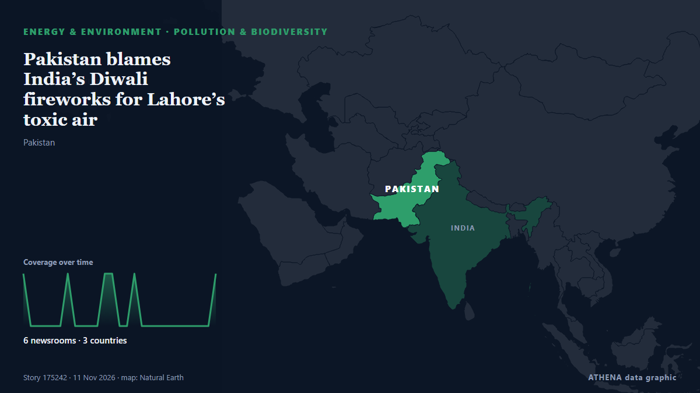

Pollution & biodiversity
SponsoredPresented by  Cybernetics and Artificial Intelligence Lab Welcome to the Cybernetics and Artificial Intelligence Laboratory, established at the Department of Business Administration of the National and Kapodistrian University of Athens. The lab is headed by Professor Dimitrios Thomakos. The lab aims to do research that can be published in top venues. Our research uses tools and methods of Artificial Intelligence, and lies in the following areas: - Forecasting - Decision making - Cyber security - Finance We are always looking forward to collaborating with exceptional students!
Cybernetics and Artificial Intelligence Lab Welcome to the Cybernetics and Artificial Intelligence Laboratory, established at the Department of Business Administration of the National and Kapodistrian University of Athens. The lab is headed by Professor Dimitrios Thomakos. The lab aims to do research that can be published in top venues. Our research uses tools and methods of Artificial Intelligence, and lies in the following areas: - Forecasting - Decision making - Cyber security - Finance We are always looking forward to collaborating with exceptional students!
| 29 Oct | 0 |
|---|---|
| 30 Oct | 0 |
| 31 Oct | 0 |
| 1 Nov | 0 |
| 2 Nov | 0 |
| 3 Nov | 0 |
| 4 Nov | 0 |
| 5 Nov | 1 |
| 6 Nov | 1 |
| 7 Nov | 1 |
| 8 Nov | 3 |
| 9 Nov | 3 |
| 10 Nov | 1 |
| 11 Nov | 0 |

Pakistan blames India’s Diwali fireworks for Lahore’s toxic air
Marriyum Aurangzeb says pollutants been carried by light winds and air drifting from Delhi in aftermath of Diwali. from Express Tribune
Thick smog shrouds New Delhi after Diwali firecrackers add to seasonal pollution
New Delhi, home to over 30 million people, regularly ranks among the world's most polluted areas during winter, with pollution worsening in late October and November. from NPR
Singapore to end N95 mask distribution on Saturday as haze abates
The Ministry of Health will deactivate both the Public Health Preparedness Clinic Scheme and the Haze Subsidy Scheme from Nov 12. from CNA (Channel NewsAsia)
Delhi records most polluted Diwali in five years; AQI remains ‘very poor’ a day after
India orders schools in and around Delhi to offer online classes, encourages people to work from home ahead of Diwali. from Express Tribune
HC directs BIWTA to clear plastic waste from Buriganga banks
BIWTA reports removing around 300 tonnes of waste from the Islampur area, but the court seeks a full report on the clearance and measures to prevent further dumping. from The Business Standard (Bangladesh) (working feed)